Игра начиналась как аккуратное исполнение письма: три стороны, четыре зоны, домики деревяные, отрубленные руки и корованы, которые можно грабить. Шутка работала ровно один вечер — потом мир заканчивался, потому что заканчивалась карта.
Дальше всё это перестало быть одной выученной локацией. В июле мир ожил и обзавёлся лицами, доспехами, окнами и шестью породами деревьев. Потом появились настоящие развилки похода, а в сентябре — новые способы драться, командовать и искать дорогу, ещё одна большая переделка картинки и лук без автоматического прицеливания. Ниже — как это происходило, по-человечески и без экскурсии во внутренности игры.
Старые кадры здесь оставлены нарочно: это история, а не подмена прошлого свежими скриншотами. После первой версии идут июльские снимки; новые сентябрьские главы и кадры — ближе к концу.
Что умела самая первая версия
Зона людей, зона императора с дворцом, зона эльфов с густым лесом и зона злого со старым фортом. Один бесшовный мир, у каждой стороны свой угол и три задачи. Можно было слушаться командира или быть самому себе командиром, ходить на набеги, покупать и т. п., терять руки, ноги и глаза, ставить протезы и, разумеется, грабить корованы.
Всё это никуда не делось. Просто теперь это не весь мир, а стартовый набор.


Мир перестал быть выученным наизусть
Перед началом можно ввести любое число или слово: памятную дату, кличку коня или «джва года». Из этого собирается карта 5×5 — холмы, биомы, поселения, дороги, река и мосты. У каждой стороны своя точка старта, своя цепочка целей и своя финальная крепость.
Одинаковый seed всегда даёт одинаковый мир, так что удачной кампанией или особенно проклятым мостом можно поделиться с другом и посмотреть, кто первым дойдёт до финала. Карта открывается вокруг героя: сначала известен один квадрат из 25, соседние земли выходят из тумана войны по мере путешествия.


Мир живёт, пока пользователя нет рядом
Самое крупное изменение: остальные 24 квадрата больше не ждут, пока туда кто-нибудь придёт. Фракции давят друг на друга и отжимают территории, зверьё выходит из леса и жжёт поселения, корованы едут по дорогам и не всегда доезжают. Всё это происходит само.
В углу экрана появилась «Хроника» — короткая сводка о том, что случилось в уже открытых квадратах: где сменился хозяин, чьи домики догорели, какой корован ограбили раньше пользователя. Карта тоже честно раскрашивается: спорные квадраты помечены мечами, разорённые — огнём.
Из этого следует неприятное, но интересное: можно опоздать. Прийти на пепелище, застать мародёров на углях, обнаружить, что в лавке больше некому торговать, а цены в соседнем поселении выросли, потому что до него не доехал обоз. И наоборот — успеть и отбить набег.

Раньше мир начинался там, где стоял пользователь. Теперь пользователь — просто один из тех, кто по нему ходит. Причём далеко не самый организованный.
Корованы поехали сами
Корован больше не декорация, которая наматывает круги для галочки. Он выезжает из одной точки, едет по настоящим дорогам в другую, везёт товар и меняет цены там, куда доехал. У него есть охрана, которая дерётся за телегу, а если из кустов выходит что-то слишком зубастое — бросает её и убегает.
Поэтому теперь корованы можно не только грабить, но и опаздывать на них. Прийти к телеге и прочитать «Корован уже ограбили» — это отдельный, очень обидный жанр.

В лесу завелось зверьё
Кроме трёх сторон конфликта в мире появились волки, кабаны, медведи и тролли. Они враждебны всем сразу: и эльфам, и охране дворца, и злодею, и мирным жителям. Стая волков наваливается толпой и разбегается, когда ломается; кабан разгоняется и не умеет поворачивать; тролль вообще не интересуется людьми — он разбирает поселение.
Ночью и в непогоду зверьё смелеет, под крепкой властью — притихает. На карте у него своя метка, а в «Хронике» — свои строчки про то, чьи домики этой ночью перестали быть деревяными.

У домиков появились местные
В поселениях теперь кто-то живёт: жители ходят от домика к домику и делают вид, что заняты. Когда рядом начинается драка, они разбегаются по кустам. Их можно потерять — зверьё и налётчики этим пользуются, — а можно и убить самому: игра за это не даст ни золота, ни достижения, только неодобрительную строчку.
Насколько поселение оживлённое, зависит от того, как ему живётся: квадрат, который вчера пережил набег, заметно тише соседнего. Ночью зажигаются костры, у патрулей появляются факелы, по полям бродят олени, из травы взлетают птицы, а на телах рассаживаются вороны. Никакой пользы — просто мир перестал выглядеть пустым.

Враги научились бояться и звать своих
Противники перестали быть одинаковыми болванчиками, которые бегут в лоб. Они выбирают, на кого навалиться, заходят с разных сторон вместо очереди у одной точки и замечают, что происходит рядом: увидел одного — подтянулись остальные.
Появилась и мораль. Раненый одиночка может сорваться и убежать, стая рассыпается, если потеряла своих, а командир умеет наорать и вернуть беглеца в строй. Командиры и чемпионы, к счастью, не бегают никогда — иначе за ними пришлось бы гоняться по всей карте.

Драка стала громче, а увечья — обиднее
У каждой стороны появился свой приём, у ударов — подготовка, откат и отбрасывание, а у попаданий — вспышки, линии скорости, звук и короткие акценты камеры. Добыча вылетает из противника, светится по редкости и подаётся отдельной карточкой. Иногда игра честно пишет «БАБАХ», и это приятно.
Обещание «не только убить, но и отрубить руку» тоже стало заметнее. Руки, ноги и глаза теперь показаны отдельной панелью: целы, ранены или утрачены. Раны накапливаются, кровотечение не проходит само, а протез — не косметика, а способ доиграть поход.

Пользователь ходит не один
Каждый поход начинается с трёх спутников, и состав сразу выдаёт характер стороны: эльфы берут разведчиков и лучника, охрана дворца — солдат, злодей выходит с приспешником, громилой и стрелком. Спасённые пленники могут присоединиться по дороге.
Одной кнопкой отряд собирается рядом, отставшие ускоряются, а перед дракой сначала стараются вернуться к герою. Здоровье и положение спутников сохраняются вместе с походом, так что у отряда появляется собственная история — обычно про то, как лучник отстал ровно тогда, когда был нужнее всего.
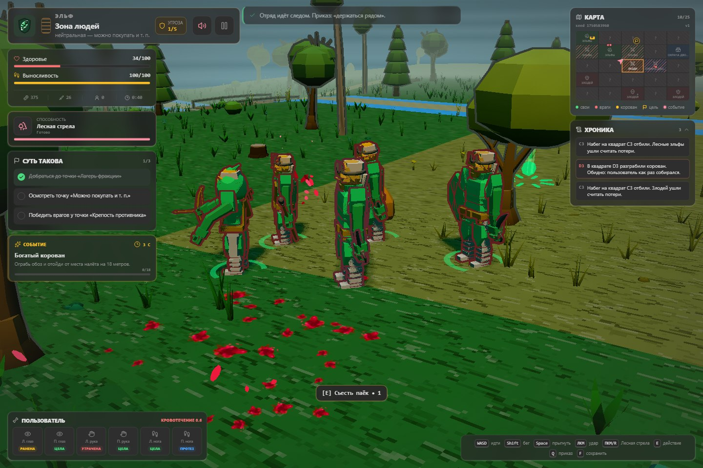
Погода, ночь и всё, что мешает жить
День сменяется ночью, солнце уступает луне и звёздам, факелы после заката становятся полезными. В лесу идёт дождь, у форта метёт снег, облачность приглушает свет, ветер качает траву. В непогоду даже противники горбятся и идут медленнее.
Земля покрыта процедурными узорами, у дорог есть колеи, у воды — течение, под ногами растут трава, папоротники, цветы и камни. Ночью всё это гаснет, и единственным источником света остаются костры, факелы и окна.

Мир перерисовали целиком
Июльская переделка принесла не только новые занятия, но и новую картинку. Раньше поселение было коробкой с пирамидкой сверху, лес — одним и тем же деревом в трёх размерах, а мост — доской с двумя перилами. Теперь поселение стало местом: несколько домов кольцом вокруг колодца, телега, поленница, бельё на верёвке, фонарь, забор и ворота с той стороны, откуда приходят гости.
У домов появились двери, в которые можно было бы войти, окна с рамами, подоконниками и ставнями, печные трубы, крыльцо и свесы крыши, которые кладут тень на стену. Вечером в окнах загорается свет. По одному виду стены теперь понятно, чья это земля: у эльфов фахверк и солома, у охраны дворца тёсаный камень и черепица, у злодея горизонтальный сруб и заострённый частокол.
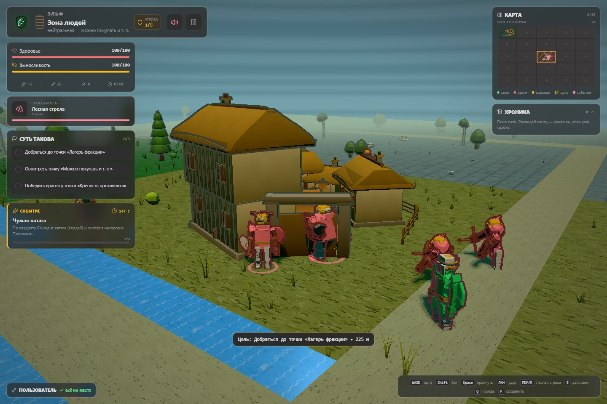
В лесу вместо одного дерева выросли шесть пород, и различаются они не размером, а формой: ель собрана ярусами, у широколиственного дерева видно ветки под кроной, берёза стоит голым светлым столбом, а колючий кустарник стелется низко. Под ними завелись подлесок, пни и валежник. Камни легли слоями, и у каждой земли свой налёт: в лесу мох, у дворца светлый лишайник, в горах злодея пепел.
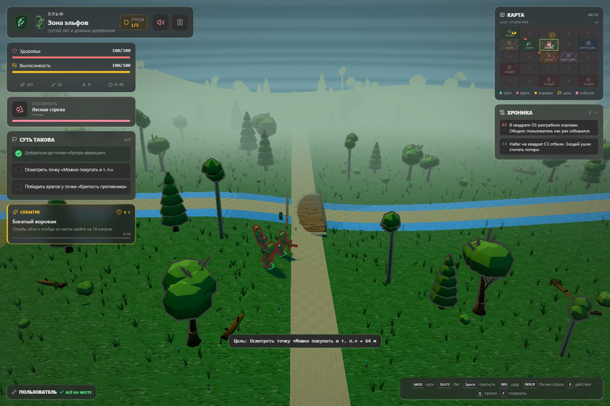
Финальные крепости перестали быть большими домиками. У злодея это зубчатый донжон в кольце башен, соединённых стеной, с воротами со стороны подхода. У охраны дворца — та же логика, но из камня, с башнями под синими шпилями и знаменем над въездом. Издалека видно не только «там что-то есть», но и чьё оно.
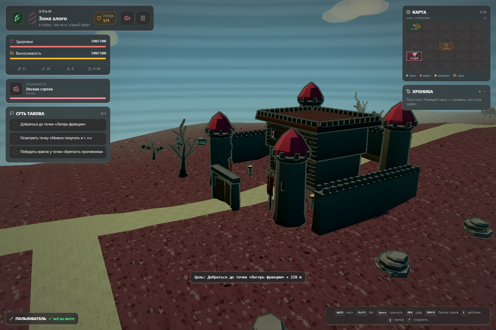
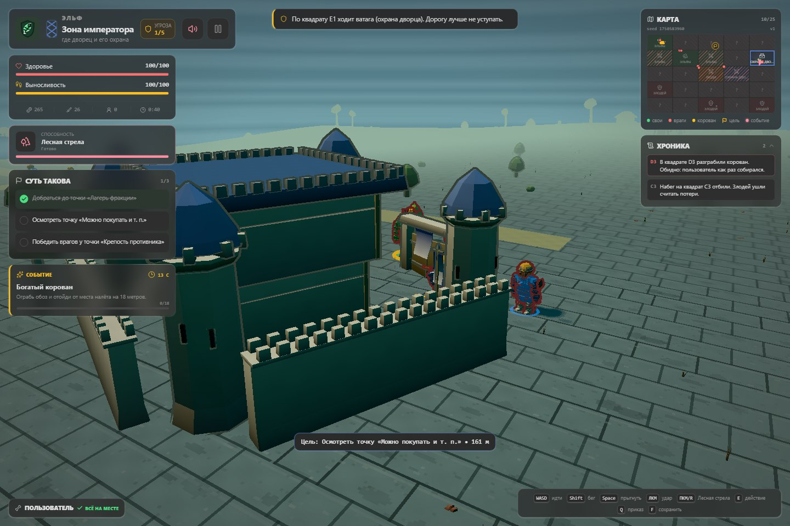
У всех появились лица, руки и ноги
Человек в этой игре долго был туловищем, головой, двумя палками-руками, двумя палками-ногами и одним ящиком вместо меча. Теперь у него есть шея, плечи, кисти, ступни и лицо, а поверх — пояс, сумка, наплечники, наручи, поножи, шлем, плащ или накидка. Двенадцать солдат в строю больше не двенадцать копий одного солдата: телосложение, шлем, причёска и оттенок ткани у каждого свои.
Стороны конфликта теперь различимы по силуэту, даже если убрать цвет. Эльф самый высокий и узкий, в длинном разрезном плаще с воротником-стойкой. Охрана дворца самая квадратная: полосчатая кираса, прямоугольные наплечники, юбка из пластин и неподвижный табард. Злодей сутулый и несимметричный: один огромный шипастый наплечник, второе плечо голое, рваный подол и торчащая нижняя челюсть.
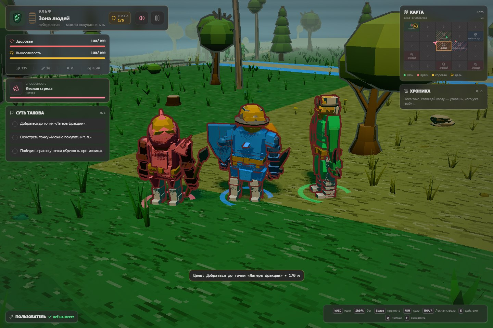
Роль тоже читается с тридцати шагов. Громила шире всех, голова утоплена в плечи, руки ниже колен, в руках двуручный тесак. Разведчик поджарый, в капюшоне и коротком плаще. У лучника колчан наискось за спиной и наруч на левой руке. Командир выше всех и стоит прямо, в плаще до земли и высоком гребенчатом шлеме. Местный житель маленький, сутулый, в фартуке и платке, с узелком за спиной и пустыми руками.
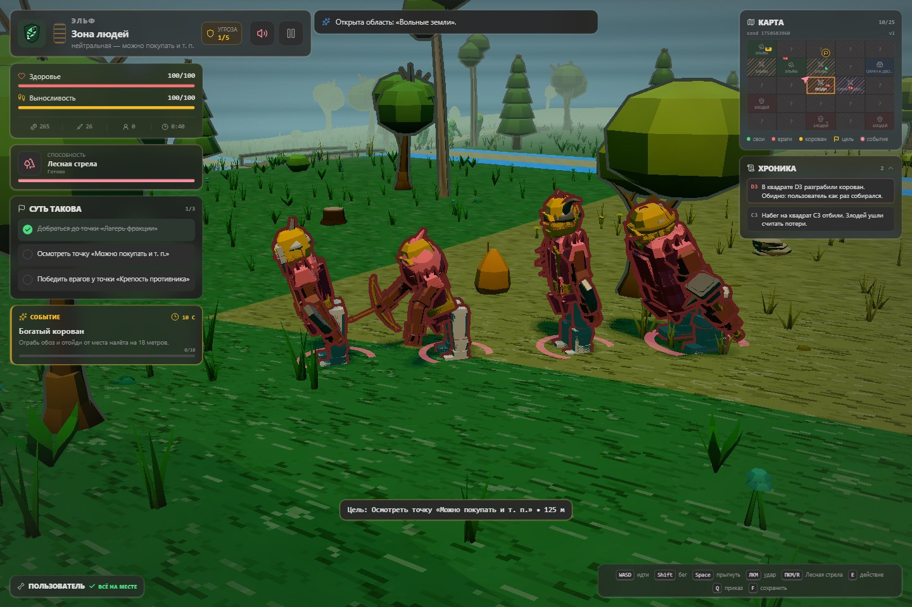
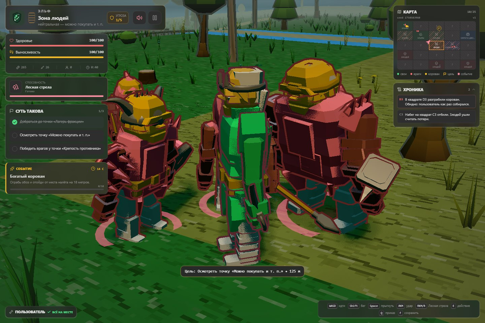
Чернильный контур и как его выключить
Общий замысел картинки — «походный комикс, собранный кодом»: угловатые формы, уверенный цвет стороны и чернильный контур поверх всего, что должно читаться. Контур и делает игру похожей на рисунок, а не на набор кубиков: он обводит силуэты, подчёркивает ступени крыши и слои камня и не даёт зелёному раствориться в зелёном.
Если так не нравится, всё это выключается из меню по отдельности: контуры, растительность, свечение, погода и время суток. На то, что происходит в мире, ни один из переключателей не влияет — грабить корованы можно с любой картинкой.
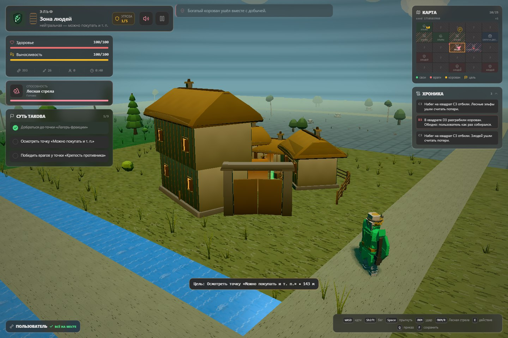
Эмблема вместо подписи
Лист лесных эльфов, крепость охраны дворца и череп злодея встречают игрока ещё в меню и дальше сопровождают выбранную сторону на карте, в активном походе и в истории забегов. Панорама с лесом, корованом, лагерем и дворцом собирает весь конфликт в одну картинку.

Музыка слышит, что происходит
У каждой фракции своя тема со своим темпом и набором инструментов, а лес, нейтральные земли, дворец и форт меняют её оттенок. Спокойное исследование звучит просторно, замеченный враг добавляет напряжение, драка уплотняет бас и ударные, а чемпион выводит тему на максимум.
- Спокойный мирИсследование
- Враг рядомТревога
- Есть контактБой
- Особая цельЧемпион
Переходы случаются на границе такта, поэтому одна длинная композиция развивается вместе со сценой, а не обрывается ради другого файла. Чем выше общая угроза кампании, тем настойчивее ритм.
Даже проигранный поход что-то оставляет
Забег можно приостановить и продолжить позже. Победы, поражения и брошенные походы попадают в историю, а постоянный профиль копит валюту на стартовые дары: один открывает соседние земли, другой добавляет припасы, третий — здоровье или заточенное оружие с самого начала.

Достижений — 58 в девяти категориях, и следят они за тем, что действительно произошло: кого победили, что купили, сколько корованов ограбили, какие травмы пережили и какой стороной дошли до финала. Среди них есть «Суть такова», «Труп тоже 3Д», «Всего в игре 4 зоны», «Я джва года хочу» и, конечно, «Грабить корованы».

Поход теперь приходится выбирать
После июльской перерисовки дело дошло до самих задач. «Подряды» — это уже не одинаковая прогулка до очередного флажка. Где-то надо снять верёвки со своего, где-то отбить домики, пока они ещё стоят, уложить заезжего чемпиона или вытащить добычу из пепелища раньше мародёров. Таких вариантов десять, а фракции получают подходящие им дела.
На развилке написано честно: «Или — или». Взялся за один подряд — другой путь закрылся, а не встал в очередь на потом. Если подряд сорван, можно дойти до точки и закрыть его без награды: весь поход из-за одного опоздания не застрянет. Обязательные пункты при этом никуда не исчезают.
«Слухи» тоже перестали быть чужой газетой. Можно взяться провести корован, удержать квадрат или сжечь склад, с которого собирают набег. Одновременно — только одно обещание. До выбора видно, чем грозит бездействие, а после мир различает «никто не пришёл» и «пользователь обещал и не пришёл».
Ещё появились шесть уставов, из которых за поход можно набрать не больше трёх. Это не ещё один плюс к урону, а обмен одного удобства на другую неприятность. «Устав скорого шага» разрешает бегать без расхода выносливости, но запрещает восстанавливать её стоя. «Интендантский устав» удерживает цены на лечение и протезы, зато торговец больше не продаёт улучшения. Бесплатно хорошего по-прежнему не бывает.
Итог теперь записывается в «Походную сводку»: маршрут, судьба земель, спутники, раны, уставы и причина, по которой всё закончилось. Ею можно поделиться текстом. Уже не просто «продержался семь минут», а краткая объяснительная о том, куда делись семь минут, отряд и левая нога.
Сентябрь: махать мечом уже мало
Обновление 6 сентября связало четыре вещи: личную драку, приказы спутникам, карту похода и финальные бои. У пользователя появились способы справляться с неприятностями, кроме «жать удар быстрее».
Связка из трёх ударов требует направления и момента: последний замах сильнее
обязывает довести дело до конца. На C появился короткий уворот
в сторону движения, а без движения — назад. Он тратит выносливость и защищает
лишь в середине шага, не проходит сквозь стены и не отменяет уже начатый
завершающий удар. Уворот — не разрешение перестать смотреть на противника.
У охраны дворца есть «точный щит»: поднять его перед самым попаданием спереди выгоднее, чем всё время стоять за щитом и ждать, пока кончится запас сил. Удачный блок ближнего удара даёт время ответить. Блок стрелы, впрочем, не оглушает того, кто её выпустил.
Камерой теперь можно смотреть выше и ниже горизонта. Если браузер не отдаёт захват мыши, мир поворачивается перетаскиванием — такой жест не считается ударом. На сенсорном экране можно одной рукой двигаться, другой осматриваться, отдельно прыгать и уворачиваться. Потерянный фокус и пауза больше не означают, что герой продолжит куда-то бежать без пользователя.
Трое рядом — ещё не командование
Теперь на T открываются приказы: идти следом, держать позицию,
сосредоточить удары на одной цели или собраться у героя. Быстрое переключение
«следом / держать» осталось на Q. Приказы доступны и с панели
отряда, а выбор ставит игру на паузу — можно подумать, а не погибнуть
в процессе чтения четырёх кнопок.
Вместо утешительного числа «3» видны сами спутники: кто это, сколько у него здоровья, что он делает и далеко ли остался. Если лучник застрял или отстал, интерфейс больше не изображает, что он прикрывает спину. Приказ меняет поведение отряда, а не только надпись над ним.
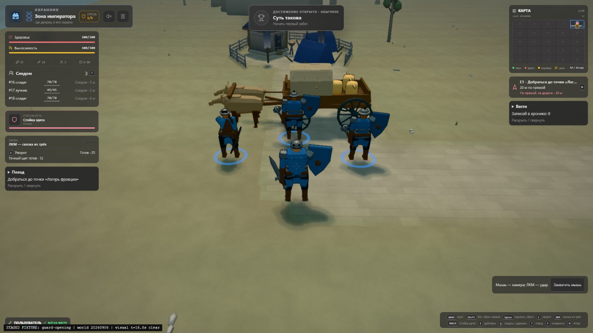
До цели — не по линейке
На M или по нажатию на мини-карту открывается «Атлас похода».
Он прокладывает путь по дорогам и настоящим мостам, а не советует идти
по прямой через реку. Можно выбрать кратчайший или осторожный маршрут:
второй обходит известную опасность, если ради этого есть куда свернуть.
Пока выбираешь дорогу, бой ждёт.
Атлас не всевидящий. Маршрут через туман войны показывает дорогу, но не раскрывает всё вокруг; местный подход к точке и направление без дороги отмечены отдельно и не обещают свободный проход. Выбрать место на карте — не значит принять подряд или дать обещание по слуху.
Компас остаётся на экране, даже когда рядом торговец, паёк или корован
с подсказкой E. Наконец можно одновременно знать, куда идёшь,
и видеть, что предлагают подобрать по дороге.
В конце ждут не три одинаковых толстяка
У каждой кампании появился собственный финальный противник с двумя фазами, заметной подготовкой атак и моментами, когда можно ответить. Это не один чемпион, которому трижды поменяли цвет и добавили здоровья.
- Эльфов встречает Имперский ловчий: стрелы веером, прицельная линия, смена позиции. Между залпами надо сближаться, а не стоять там, куда он уже целится.
- Охрану дворца — Воевода форта: широкий замах и разгон по прямой. Во второй фазе за первым тяжёлым ударом приходит второй; отвечать раньше времени очень соблазнительно и очень больно.
- Злодея — Маршал дворца: строй, два сопровождающих и давление спереди. Убрал фланг — получил проход. После потери половины здоровья маршал перестаёт держать строй и идёт вперёд сам.
Раны противника и фаза переживают сохранение и возвращение: пауза не лечит воеводу и не выдаёт новую охрану маршалу. Победа звучит отдельным фанфарным маршем, поражение — погребальным плачем с колокольным звоном. Даже музыка теперь понимает разницу между «дошёл» и «донесли».
Лесная стрела теперь летит туда, куда целились
13 сентября эльф получил ручной лук. Удерживаешь правую кнопку мыши
или R — камера переходит за плечо, герой берёт лук и целится
по прицелу. Каждое нажатие атаки выпускает одну стрелу и расходует
выносливость; просто держать прицел ничего не стоит.
Отпустил прицеливание — вернулся к обычной камере и мечу.
Автоматического выбора жертвы больше нет. Стрела вылетает от тетивы, падает по дуге и останавливается о землю и твёрдые препятствия. Смотреть вверх теперь имеет практический смысл, а дерево между тобой и противником — не украшение. На сенсорном экране нужно держать кнопку лука, вести прицел по миру и нажимать атаку другим пальцем.
Картинку переделали ещё раз — и оставили всем
Июль дал людям лица. Сентябрь добавил сочленённые тела: плечи, локти, кисти и снаряжение работают вместе, а ранения и протезы не теряются при смене внешности. Эльф, охранник и злодей остались героями одного угловатого походного комикса, но перестали выглядеть так, будто собраны из нескольких не знакомых друг с другом деталей.
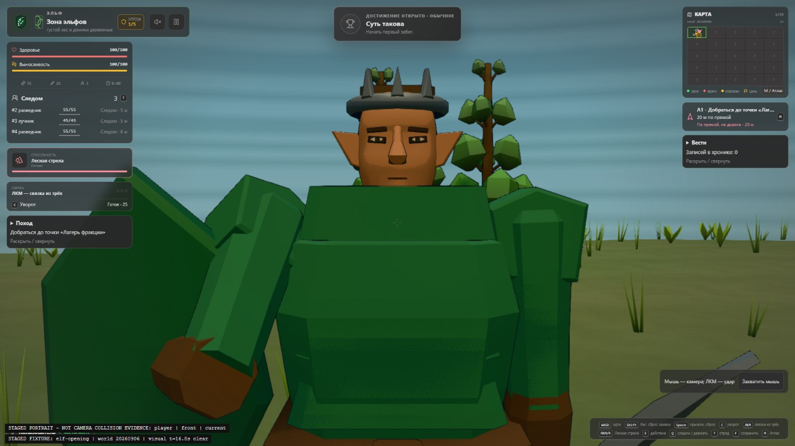
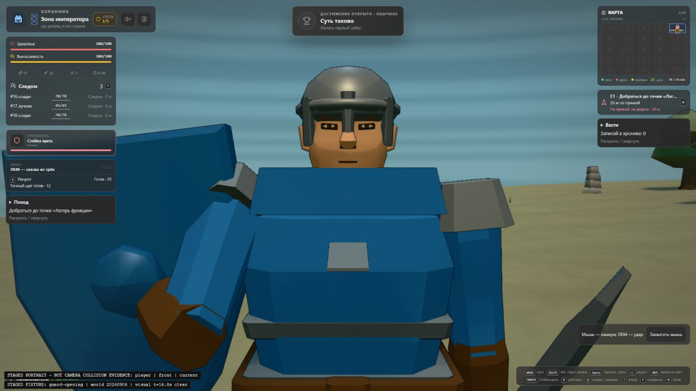
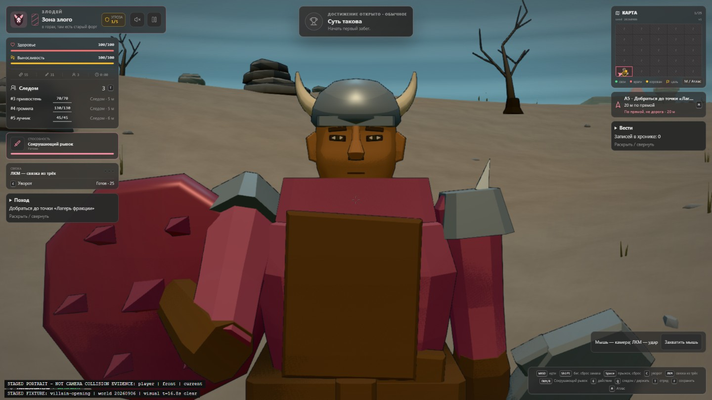
Земля, мощение, растительность, вода и постройки получили более внятные поверхности и тени. Погода отражается на виде мира, попадания оставляют акценты там, где произошли. Камера лучше обходит стены и склоны; отдельно исправлены её скачки на холмах и зависания при некоторых поворотах.
С 17 сентября улучшенная графика в высоком качестве включена для всех — и в новом походе, и при продолжении старого. Искать «предпросмотр» или выбирать между старой и новой картинкой больше не надо. Это не обещание одинаковой скорости на любом телефоне: проверка реальных устройств остаётся отдельной работой.
Сначала выбрать сторону, потом крутить настройки
В тот же день меню перестало встречать пользователя стеной переключателей. Сверху теперь карточки фракций с кнопками запуска, под ними — seed, стартовый дар и уставы. Тема, звук, эффекты и интерфейс собраны в «Настройках» внизу меню. В паузе настройки остались под рукой.
«Боевой интерфейс» переключается между полным и компактным прямо во время похода. В компактном задачи убираются под «Поход», хроника и слухи — под «Вести», но здоровье, отряд, компас и предупреждения финального боя остаются снаружи. Свечение, контуры, растительность, погоду и эффекты камеры по-прежнему можно настраивать отдельно.
Старые отключённые эффекты не включаются самовольно, сохранение похода не сбрасывается ради внешнего вида. Коровану всё равно, какой интерфейс выбрал пользователь. Важно, успеет ли пользователь до него добраться.
Коротко: было и стало
| Что сравниваем | Первая версия | Сейчас |
|---|---|---|
| Карта похода | 4 связанные зоны | 25 регионов из seed |
| Начало кампании | Выбор фракции | Быстрый запуск фракции, seed, дар и уставы |
| Задачи похода | Три задачи у каждой стороны | Развилки, 10 вариантов подрядов и обещания по слухам |
| Бой | Удар и приём фракции | Связка из трёх, уворот, точный щит и ручной лук |
| Командование | Слушаться командира или вести своих | Четыре приказа и состояние каждого спутника |
| Навигация | Карта четырёх зон | Атлас, дороги, мосты и осторожный маршрут |
| Конец кампании | Закрыть три задачи | Три разных двухфазных противника |
| Остальной мир | Ждёт пользователя | Воюет, горит и грабит сам |
| Кто в мире живёт | Три стороны конфликта | Ещё зверьё, местные и живность |
| Корованы | Ходят по кругу | Едут по дорогам с охраной |
| Враги | Бегут в лоб до конца | Обходят, зовут своих и сбегают |
| Атмосфера | Постоянное время суток | День, ночь, дождь, снег и ветер |
| Поселение | Коробка с пирамидкой сверху | Дома с окнами, колодец, забор и ворота |
| Лес | Одно дерево в трёх размерах | Шесть пород, подлесок, пни и валежник |
| Человек в кадре | Туловище, палки и ящик вместо меча | Сочленённое тело, лицо, снаряжение и видимые увечья |
| Картинка и интерфейс | Один вид игры | Улучшенная графика, отдельные эффекты, полный или компактный HUD |
| Между походами | Одно сохранение | Профиль, сводка, дары, уставы и 58 достижений |
| Музыка | 8-битные темы фракций | Реакция на место, угрозу, бой, победу и смерть |
Главное изменение в таблицу не помещается: после похода остаётся история, которую можно пересказать. Где прошла река, кого удалось спасти, какой спутник дожил до финала, чьи домики сгорели без вас и какой seed больше никогда не стоит запускать без крепкого снаряжения.
Корованы всё ещё можно грабить
Обещание из письма никуда не делось. Всё так же можно играть лесными эльфами, охраной дворца или злодеем; слушаться командира или быть самому себе командиром; ходить на набеги, покупать и т. п., терять части тела, ставить протезы и в конце концов ограбить корован.
Только теперь до корована ещё надо дожить, дойти через незнакомый мир и успеть раньше тех, кто занимается этим без вас. Новый seed — новая карта, новые неприятности и новый повод сказать своим войскам: «За мной, на дворец!»
Играть в «КОРОВАНЫ»